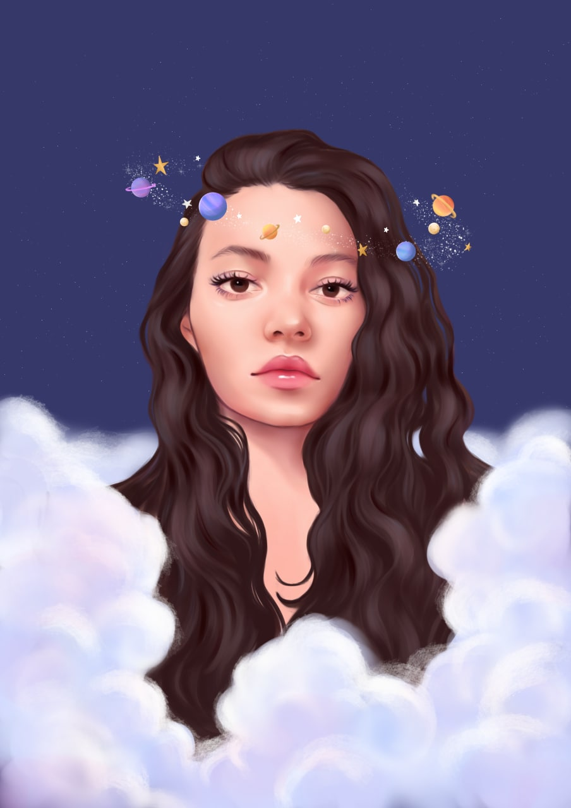

Meu nome é Julieta, tenho 22 anos, graduanda em Sistemas de Informação e minha maior paixão são pinturas com aquarela e arte digital.
Minha relação com o desenho e a arte começou quando era criança, sempre amei desenhar e as pessoas ao meu redor me incentivavam com elogios. Cresci vendo minha mãe fazer desenhos à lápis, pois ela também gostava e decidiu fazer um curso de desenho por correspondência.
Na maior parte da minha trajetória, fui autodidata, porém tive alguns professores e tutores que me motivavam e inspiraram a continuar aprendendo. Desde da minha adolescência, vendia telas pintadas à óleo e atualmente faço da arte de desenhar minha profissão.